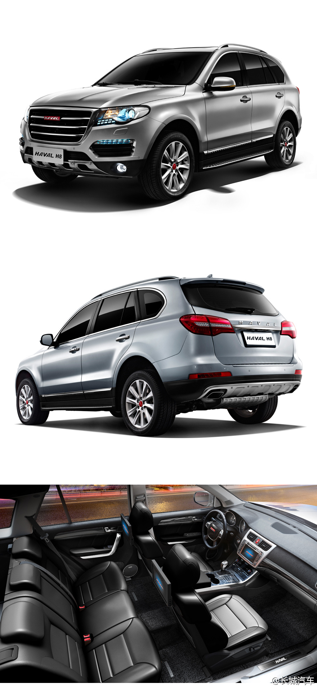

虽然我是个长城车主，也认可长城车的品质，但是对于H8的定价策略还是那句话，不作死就不会死！@长城汽车官方平台:【哈弗H8将于广州车展上市，售价20万以上】作为哈弗品牌旗下首款中高端越级豪华SUV，哈弗H8将于11月广州车展正式上市，售价区间为20万-25万元。哈弗H8以专业SUV平台、高效动力、品质设计及智能科技开创同价位SUV新越级标准，进一步诠释哈弗“专注、专业、专家”的品牌理念。网页链接 